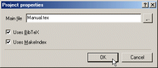

| Modifying the Project Settings |
All project settings can be changed afterwards, by choosing the menu item
'Project|Properties...'. For more information about
Creating a new project, please refer to that
section.

The controls have the following meanings:
- 'Main file'
- This is the path of the project's main file, that will be passed to
the (La)TeX compiler, when generating output.
The path has to be specified relatively to the directory, the project
file is placed in.
- 'Uses BibTeX'
- Enable this option, if TeXnicCenter should run BibTeX, when
generating output for this project.
- 'Uses MakeIndex'
- Enable this option, if TeXnicCenter should run MakeIndex, when
generating output for this project.